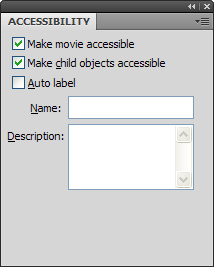
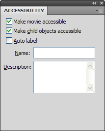
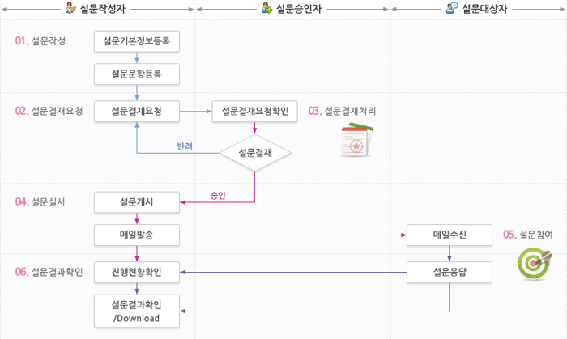
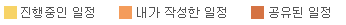
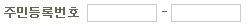
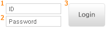
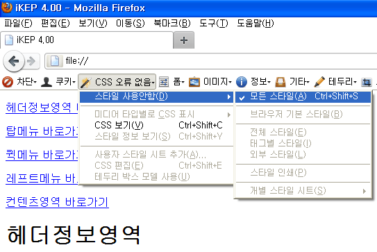

Detailed Guide for IKEP
인식의 용이성
1.1 (대체 텍스트) 텍스트 아닌 콘텐츠에는 대체 텍스트를 제공해야 한다.
의미가 있는 이미지는 대체텍스트를 제공하되, 의미가 없는 이미지(글머리 기호, 테두리, 장식용 이미지, 공백 이미지 등)의 경우에는 대체 텍스트를 공백(alt="")으로 제공해야 한다.
의미있는 이미지의 경우 :
<img src="../../images/theme/theme01/basic/btn_search.gif" alt="조회" />
의미없는 이미지의 경우 :
<img src="../../images/theme/theme01/basic/ic_title_01.gif" alt="" />
<img src="../../images/theme/theme01/basic/btn_search.gif" alt="조회" />
의미없는 이미지의 경우 :
<img src="../../images/theme/theme01/basic/ic_title_01.gif" alt="" />
이미지맵과 input 태그의 버튼이미지를 사용할 경우에도 alt를 쓴다.
이미지맵을 쓸 경우 :
<area shape="rect" coords="10,5,5,5" href="#" alt="validator" />
이미지 input을 쓸 경우 :
<input type="image" src="../../images/login/btn_login.gif" alt="로그인" />
<area shape="rect" coords="10,5,5,5" href="#" alt="validator" />
이미지 input을 쓸 경우 :
<input type="image" src="../../images/login/btn_login.gif" alt="로그인" />
<img src="../../images/icon/ic_hwp.gif" alt="한글"> → 한칸 띄고 /> 반드시 삽입
<img src="../../images/icon/ic_hwp.gif" alt=한글 /> → " " 삽입
<img src="../../images/icon/ic_hwp.gif" alt=한글 /> → " " 삽입
타이틀 옆에 more 버튼이 있는 경우 별도로 title을 써서 링크 페이지의 설명을 추가하여 링크의 목적지를 알려준다.
<a href="01.html" title="일정관리"> <img src="btn_more.gif" alt="more" /></a>
<a href="01.html"> <img src="btn_more.gif" alt="바로가기" /></a> → 무엇에 대한 바로가기라는 것을 알 수 없으므로 title을 a 태그 내에 별도로 작성함
웹 애플리케이션 또는 리치 인터넷 애플리케이션(RIA: Rich Internet Application)의 경우, 해당 저작 도구에서 제공하는 접근성 기능을 활용하여 대체 텍스트를 제공해야 한다.
- 실버라이트의 경우, 키보드를 사용해서 접근이 가능하게 제작하면 UIA(UI Automation)를 통해서 접근성 기능을 제공할 수 있다.
- 플래시의 경우, Accessibility Panel에서 이름(Name)이나 설명(Description)으로 제공해야 한다.
- 실버라이트의 경우, 키보드를 사용해서 접근이 가능하게 제작하면 UIA(UI Automation)를 통해서 접근성 기능을 제공할 수 있다.
- 플래시의 경우, Accessibility Panel에서 이름(Name)이나 설명(Description)으로 제공해야 한다.
플래시 대체 텍스트 제공 사례 (accessibility panel)

그러나 복잡한 메뉴나 콘텐츠의 경우 지침 4.2번 내용처럼 플래시에 대한 대체 콘텐츠를 별도로 제공하는 것이 좋다.

그러나 복잡한 메뉴나 콘텐츠의 경우 지침 4.2번 내용처럼 플래시에 대한 대체 콘텐츠를 별도로 제공하는 것이 좋다.
프로세스나 설명 위주의 이미지는 다음과 같이 별도 소스를 생성하여 대체텍스트를 제공한다.

소스를 아래와 같이 작성한다.
<img src="../../images/common/img_surveyProcess.gif" alt="Survey Process" />
<!--프로세스 이미지에 대한 대체텍스트-->
<div class="none">
<ul>
<li>1. 설문작성자
<ul>
<li>1-1) 설문작성
<ul>
<li>1-1-1) 설문기본정보등록</li>
<li>1-1-2) 설문문항등록</li>
</ul>
</li>
<li>1-2) 설문승인자에게 설문결재요청
<ul>
<li>1-2-1) 설문결재반려일 경우 설문결재 재요청</li>
<li>1-2-2) 설문결재승인일 경우 설문실시</li>
</ul>
</li>
<li>1-4) 설문실시
<ul>
<li>1-4-1) 설문개시</li>
<li>1-4-2) 메일발송</li>
</ul>
</li>
<li>1-5) 설문결과확인/Download</li>
</ul>
</li>
<li>2. 설문승인자
<ul>
<li>2-1) 설문결재요청확인 - 설문반려, 승인여부 결정</li>
</ul>
</li>
<li>3. 설문대상자
<ul>
<li>3-1) 메일 수신</li>
<li>3-2) 설문 응답</li>
</ul>
</li>
</ul>
</div>
소스를 아래와 같이 작성한다.
<img src="../../images/common/img_surveyProcess.gif" alt="Survey Process" />
<!--프로세스 이미지에 대한 대체텍스트-->
<div class="none">
<ul>
<li>1. 설문작성자
<ul>
<li>1-1) 설문작성
<ul>
<li>1-1-1) 설문기본정보등록</li>
<li>1-1-2) 설문문항등록</li>
</ul>
</li>
<li>1-2) 설문승인자에게 설문결재요청
<ul>
<li>1-2-1) 설문결재반려일 경우 설문결재 재요청</li>
<li>1-2-2) 설문결재승인일 경우 설문실시</li>
</ul>
</li>
<li>1-4) 설문실시
<ul>
<li>1-4-1) 설문개시</li>
<li>1-4-2) 메일발송</li>
</ul>
</li>
<li>1-5) 설문결과확인/Download</li>
</ul>
</li>
<li>2. 설문승인자
<ul>
<li>2-1) 설문결재요청확인 - 설문반려, 승인여부 결정</li>
</ul>
</li>
<li>3. 설문대상자
<ul>
<li>3-1) 메일 수신</li>
<li>3-2) 설문 응답</li>
</ul>
</li>
</ul>
</div>
1.2 (멀티미디어 대체 수단) 동영상, 음성 등 멀티미디어 콘텐츠를 이해할 수 있도록 대체 수단을 제공해야 한다.
동영상, 음성, 플래시 등 멀티미디어 콘텐츠를 이해할 수 있도록 동일한 정보의 대체 수단(자막, 원고 또는 수화)를 제공해야 한다.
1.3 (명료성) 콘텐츠는 명확하게 전달되어야 한다.
색상을 배제하여도 원하는 내용을 전달할 수 있도록, 색상 이외에도 명암이나 패턴 등으로 콘텐츠 구분이 가능해야 한다.
- 그래프의 경우 패턴이나 명도차, 형태의 차이, 마크업, 언어적인 설명 등으로 정보를 인식하게 한다. (흑백 프린터로 출력시 구분 가능)
- 그래프의 경우 패턴이나 명도차, 형태의 차이, 마크업, 언어적인 설명 등으로 정보를 인식하게 한다. (흑백 프린터로 출력시 구분 가능)

텍스트 콘텐츠와 배경 간의 명도 대비는 4.5대 1 이상이어야 한다.
WCAG 2.0 지침은 명암의 강도를 '1~21' 단계로 나누고 명암을 전혀 구분할 수 없는 상태를 '1:1' (white:white)으로 표현하며 전경과 배경이 확연하게 구분되는 상태를 '21:1 (black:white)으로 표현한다.
일반적으로 쓰는 12px의 글자가 #777777 이고 배경이 white 라면 4.48:1의 명암비가 나온다. 글자 색상이 최소 #767676은 되어야 4.54:1의 명암비로 웹접근성을 충족하는 것이다. (노안, 약시 고려)
글자 사이즈 18pt 이상 또는 14pt 볼드체라면 3:1 수준의 명암 대비를 갖추어도 된다. 즉, 글자 사이즈가 커지면 어느 정도까지는 옅은 색상을 사용해도 된다.
명도 대비 평가도구는 다음 사이트를 활용한다.
http://www.snook.ca/technical/colour_contrast/colour.html
WCAG 2.0 지침은 명암의 강도를 '1~21' 단계로 나누고 명암을 전혀 구분할 수 없는 상태를 '1:1' (white:white)으로 표현하며 전경과 배경이 확연하게 구분되는 상태를 '21:1 (black:white)으로 표현한다.
일반적으로 쓰는 12px의 글자가 #777777 이고 배경이 white 라면 4.48:1의 명암비가 나온다. 글자 색상이 최소 #767676은 되어야 4.54:1의 명암비로 웹접근성을 충족하는 것이다. (노안, 약시 고려)
글자 사이즈 18pt 이상 또는 14pt 볼드체라면 3:1 수준의 명암 대비를 갖추어도 된다. 즉, 글자 사이즈가 커지면 어느 정도까지는 옅은 색상을 사용해도 된다.
명도 대비 평가도구는 다음 사이트를 활용한다.
http://www.snook.ca/technical/colour_contrast/colour.html
텍스트 콘텐츠와 배경 간의 명도 대비는 4.5대 1 이상이어야 한다. 지금 이 글의 색상은 #888로 명도 대비가 3.54이다.
자동으로 재생되는 배경음을 사용하지 않아야 한다.
배경음은 사용자의 선택에 의해 제공되도록 해야 한다. 화면 낭독 프로그램(Screen reader)을 사용하는 사람들은 화면 낭독 프로그램에서의 음성과 배경음 간의 충돌로 인해 웹 사이트 이용에 애로를 느낀다.
배경음은 사용자의 선택에 의해 제공되도록 해야 한다. 화면 낭독 프로그램(Screen reader)을 사용하는 사람들은 화면 낭독 프로그램에서의 음성과 배경음 간의 충돌로 인해 웹 사이트 이용에 애로를 느낀다.
운용의 용이성
2.1 (키보드 접근성) 콘텐츠는 키보드로 접근할 수 있어야 한다.
키보드(또는 키보드 인터페이스)만으로도 웹 콘텐츠가 제공하는 모든 기능을 수행할 수 있어야 한다.
마우스 이벤트와 키보드 이벤트를 동일하게 적용하여 키보드(Tab키, Shift+Tab키, 상, 하, 좌, 우 방향키 등)로도 마우스로 사용하는 기능과 동일하게 제공할 수 있게 하는 경우 준수한 것으로 판단한다.
마우스 이벤트와 키보드 이벤트를 동일하게 적용하여 키보드(Tab키, Shift+Tab키, 상, 하, 좌, 우 방향키 등)로도 마우스로 사용하는 기능과 동일하게 제공할 수 있게 하는 경우 준수한 것으로 판단한다.
링크가 적용된 콘텐츠의 테두리를 없애기 위한 소스를 사용하지 않는다.
onfocus="this.blur()" → 사용금지
링크가 적용된 이미지의 테두리를 없애기 위해 onfocus="this.blur()"를 제공한 경우 키보드로 초점을 이동할 수 없으므로, 이러한 경우 준수하지 못한 것으로 판단
링크가 적용된 이미지의 테두리를 없애기 위해 onfocus="this.blur()"를 제공한 경우 키보드로 초점을 이동할 수 없으므로, 이러한 경우 준수하지 못한 것으로 판단
텍스트필드 입력시 포커스 자동 이동 금지 (주민등록번호는 한 필드에 입력받는 것을 권장하기도 한다.)

→ 포커스 자동이동시 shift+tab 키로 돌아가기 불가능함
→ 포커스 자동이동시 shift+tab 키로 돌아가기 불가능함
select 요소로 페이지 이동 기능을 만드는 경우, 키보드만으로 하위항목을 선택할 수 있어야 한다.
※ 셀렉트 박스 내 onchage 속성 사용시 주의사항
- 위 화면에서 D화면를 선택하려면 마우스로는 한번에 이동이 가능하지만 키보드로는 3단계를 거쳐 내려가야 한다.만약 바로가기 버튼이 없고 onchange 속성만 사용했다면 키보드로 D화면까지 도달하기 전 B화면에서 화면 전환이 이루어지고 디폴트 값인 A화면이 다시 display되어 D화면까지는 갈 수 있는 방법이 없게 된다.
따라서 화면 전체를 전환하거나 새창으로의 링크를 제공하는 경우 onchange를 사용해서는 안되며 위와 같이 select 옆에 바로가기 버튼을 제공해야 한다.
단, 경우에 따라 select option값이 현재 선택된 값으로 유지될 때 편의성 여부를 고려하여 onchange를 써도 된다.
마우스 이벤트 사용시 대응하는 키보드 이벤트를 같이 사용하도록 한다.
onmouseover와 onfocus를 함께 사용 / onmouseout와 onblur를 함께 사용
- 반드시 소문자로 기입한다.
단, onclick은 범용되는 이벤트로 마우스와 키보드를 동시에 제어할 수 있으므로 하나만 써도 된다.
onmouseover와 onfocus를 함께 사용 / onmouseout와 onblur를 함께 사용
- 반드시 소문자로 기입한다.
단, onclick은 범용되는 이벤트로 마우스와 키보드를 동시에 제어할 수 있으므로 하나만 써도 된다.
<a href="01.html" onmouseover="setMenu(1)" onfocus="setMenu(1)">
<a href="01.html" onMouseOver="setMenu(1)" > → 대문자 금지, 키보드 대응키 삽입
키보드에 의한 초점은 논리적으로 이동해야 한다.

예를 들어 위 화면에서 키보드 초점의 이동순서는 논리적으로 1->3->2가 아닌 1->2->3이어야 맞다.
예를 들어 위 화면에서 키보드 초점의 이동순서는 논리적으로 1->3->2가 아닌 1->2->3이어야 맞다.
2.2 (충분한 시간 제공) 콘텐츠를 읽고 사용하는 데 충분한 시간을 제공해야 한다.
실시간 이벤트나 제한된 시간에 수행해야 하는 활동 등은 사용자가 시간에 구애받지 않고 사용할 수 있어야 한다.
※ 예외 사항: 경매, 실시간 게임 등과 같이 시간 제한이 필수적인 콘텐츠
사용자의 의도에 상관없이 시간 제한(3초 이후)에 따라 자동으로 페이지가 변경되는 사례
- 시간 제한을 해제하고 '이동' 이라는 버튼이나 링크를 제공하는 것이 바람직함
좌우로 콘텐츠가 흐르는 형태(배너)나 뉴스 등 시간 제한이 있는 콘텐츠
- 마우스를 올리거나 키보드 초점을 받으면 정지하는 경우에도 사용자가 이미 지나간 콘텐츠를 확인할 수 있는 수단이 없으면 준수하지 못한 것으로 판단
→ 버튼(정지,앞,뒤) 등의 제어기능을 제공
※ 예외 사항: 경매, 실시간 게임 등과 같이 시간 제한이 필수적인 콘텐츠
사용자의 의도에 상관없이 시간 제한(3초 이후)에 따라 자동으로 페이지가 변경되는 사례
- 시간 제한을 해제하고 '이동' 이라는 버튼이나 링크를 제공하는 것이 바람직함
좌우로 콘텐츠가 흐르는 형태(배너)나 뉴스 등 시간 제한이 있는 콘텐츠
- 마우스를 올리거나 키보드 초점을 받으면 정지하는 경우에도 사용자가 이미 지나간 콘텐츠를 확인할 수 있는 수단이 없으면 준수하지 못한 것으로 판단
→ 버튼(정지,앞,뒤) 등의 제어기능을 제공
2.3 (광과민성 발작 예방) 광과민성 발작을 일으킬 수 있는 콘텐츠를 제공하지 않아야 한다.
초당 3~50회 주기로 깜박이거나 번쩍이는 콘텐츠 (주파수의 범위가 3Hz에서 50Hz 사이인 콘텐츠) 사용 금지
- 부득이하게 사용시 사전 경고 후 회피할 수 있는 수단 제공
- 부득이하게 사용시 사전 경고 후 회피할 수 있는 수단 제공
2.4 (쉬운 내비게이션) 콘텐츠는 쉽게 내비게이션할 수 있어야 한다.
웹 콘텐츠는 반복 네비게이션 링크를 뛰어넘어 페이지의 핵심 부분으로 직접 이동할 수 있도록 구성하여야 한다.
아래와 같이 전체 바로가기 뿐만 아니라 지나치게 긴 콘텐츠나 여러개의 조항으로 이루어진 글(개인정보보호방침 등)의 경우에도 별도로 목차와 바로가기 기능을 제공해야 한다.
다음 소스는 팝업을 제외한 모든 페이지 상단의 <body> 태그 바로 뒤에 항상 위치시킨다.
단, iframe으로 콘텐츠 영역을 불러올 경우 iframe 내에는 위의 skipNavigation을 작성하지 않는다.
아래와 같이 전체 바로가기 뿐만 아니라 지나치게 긴 콘텐츠나 여러개의 조항으로 이루어진 글(개인정보보호방침 등)의 경우에도 별도로 목차와 바로가기 기능을 제공해야 한다.
다음 소스는 팝업을 제외한 모든 페이지 상단의 <body> 태그 바로 뒤에 항상 위치시킨다.
단, iframe으로 콘텐츠 영역을 불러올 경우 iframe 내에는 위의 skipNavigation을 작성하지 않는다.
메인페이지
<!--skipNavigation Start--><div id="skipNavigation">
<p><a href="#topInfo">헤더정보영역 바로가기</a></p>
<p><a href="#topMenu">탑메뉴 바로가기</a></p>
<p><a href="#blockHeaderSub">퀵메뉴 바로가기</a></p>
<p><a href="#blockMainTop">컨텐츠영역 바로가기</a></p>
<p><a href="#portletWrap">포틀릿영역 바로가기</a></p>
</div>
<!--//skipNavigation End-->
서브페이지
<!--skipNavigation Start--><div id="skipNavigation">
<p><a href="#topInfo">헤더정보영역 바로가기</a></p>
<p><a href="#topMenu">탑메뉴 바로가기</a></p>
<p><a href="#blockHeaderSub">퀵메뉴 바로가기</a></p>
<p><a href="#leftMenu">레프트메뉴 바로가기</a></p>
<p><a href="#mainContents">컨텐츠영역 바로가기</a></p>
</div>
<!--//skipNavigation End-->
※ 실제 스크린리더기 사용자들은 반복 네비게이션 링크보다 <h1>~<h6>태그를 선호한다.
스크린리더 가상커서의 단축키를 사용하면 h태그로의 자유로운 이동이 용이하다.
다음 각각의 h태그를 해당 영역 id 밑에 위치시켜 쉽게 이동이 가능토록 한다. 서브타이틀 또한 h2~h6를 써서 그룹핑한다.
스크린리더 가상커서의 단축키를 사용하면 h태그로의 자유로운 이동이 용이하다.
다음 각각의 h태그를 해당 영역 id 밑에 위치시켜 쉽게 이동이 가능토록 한다. 서브타이틀 또한 h2~h6를 써서 그룹핑한다.
<h1 class="none">헤더정보영역</h1>
<h1 class="none">탑메뉴</h1>
<h1 class="none">퀵메뉴</h1>
<h1 class="none">레프트메뉴</h1>
<h1 class="none">컨텐츠영역</h1>
※ 반복 네비게이션 링크와 위의 h태그는 display:none 되어 볼 수 없지만 파이어폭스의 다음 기능을 활용하여 확인 가능하다.
<h1 class="none">탑메뉴</h1>
<h1 class="none">퀵메뉴</h1>
<h1 class="none">레프트메뉴</h1>
<h1 class="none">컨텐츠영역</h1>

페이지, 프레임, 콘텐츠 블록에는 적절한 제목을 제공해야 한다.
※ <frameset> 코드는 html5에서 지원하지 않으므로 사용하지 않는다.
필요시 iframe을 사용하되 반드시 title을 작성해야 한다. (iframe을 쓰면 웹접근성을 저하시킨다는 말은 잘못된 표현임)
이 때 주의할 점은 타이틀 내에 불필요한 기호(###, ▒▒▒)를 넣지 말아야 한다. 스크린리더기가 필요한 정보만 얻어가도록 간단 명료하게 타이틀을 작성한다.
※ <frameset> 코드는 html5에서 지원하지 않으므로 사용하지 않는다.
필요시 iframe을 사용하되 반드시 title을 작성해야 한다. (iframe을 쓰면 웹접근성을 저하시킨다는 말은 잘못된 표현임)
이 때 주의할 점은 타이틀 내에 불필요한 기호(###, ▒▒▒)를 넣지 말아야 한다. 스크린리더기가 필요한 정보만 얻어가도록 간단 명료하게 타이틀을 작성한다.
<iframe title="콘텐츠 영역" name="contents" src="01.html" /></iframe>
내용이 없는 빈 프레임의 경우 :
title="빈 프레임" 또는 title="내용 없는 프레임" 으로 표기.
내용이 없는 빈 프레임의 경우 :
title="빈 프레임" 또는 title="내용 없는 프레임" 으로 표기.
<iframe title="###Collaboration###" name="contents" src="01.html" /></iframe>
→ 불필요한 기호 사용 금지
링크 텍스트는 용도나 목적을 이해할 수 있도록 제공해야 한다.
용도나 목적을 이해할 수 없는 링크 텍스트 : '여기' 등과 같이 불명확한 링크 사용 금지
용도나 목적을 이해할 수 없는 링크 텍스트 : '여기' 등과 같이 불명확한 링크 사용 금지
보다 자세한 내용을 보시려면 <a href="here.html">여기</a>를 클릭하세요.
이해의 용이성
3.1 (가독성) 콘텐츠는 읽고 이해하기 쉬워야 한다.
웹 페이지에서 주로 사용하는 언어를 명확히 표시해야 한다.
<!DOCTYPE html PUBLIC "-//W3C//DTD XHTML 1.0 Transitional//EN" "http://www.w3.org/TR/xhtml1/DTD/xhtml1-transitional.dtd">
<html xmlns="http://www.w3.org/1999/xhtml" xml:lang="ko">
<html xmlns="http://www.w3.org/1999/xhtml" xml:lang="ko">
3.2 (예측 가능성) 콘텐츠의 기능과 실행 결과는 예측 가능해야 한다.
사용자가 의도하지 않은 기능(새 창, 초점 변화 등)은 실행되지 않아야 한다.
특히 메인 페이지에서 팝업이 과도하게 여러 개 뜨는 것을 지양한다.
데이터 클릭시 새창으로 링크된다면 사전에 사용자에게 알려주는 것이 좋다.
새창 표시 아이콘 등은 새창으로 열린다는 시각 정보는 제공하지만 음성정보로는 출력이 안되므로 title을 써주어 미리 알린다.
새창알림은 img 태그가 아닌 a 태그 안에 작성하며 title="새창"으로 통일한다.
특히 메인 페이지에서 팝업이 과도하게 여러 개 뜨는 것을 지양한다.
데이터 클릭시 새창으로 링크된다면 사전에 사용자에게 알려주는 것이 좋다.
새창 표시 아이콘 등은 새창으로 열린다는 시각 정보는 제공하지만 음성정보로는 출력이 안되므로 title을 써주어 미리 알린다.
새창알림은 img 태그가 아닌 a 태그 안에 작성하며 title="새창"으로 통일한다.
3.3 (콘텐츠의 논리성) 콘텐츠는 논리적으로 구성해야 한다.
스타일 시트를 이용해서 내용물의 위치를 지정할 때에는 스타일 시트를 제거했을 때에도 논리적으로 이해가 가능해야 한다.
시각적 흐름은 상→하, 좌→우로 이동하지만 스크린리더기는 소스를 작성한 순서인 상→하로만 내용을 읽어준다는 것을 고려해야 한다.
즉, css를 제거했을 때 콘텐츠의 논리적 순서가 맞는지 반드시 확인하도록 한다.
표는 이해하기 쉽게 구성해야 한다.
테이블 태그 내에는 summary와 caption을 다음과 같이 쓰도록 하고 있다.
<table summary="테이블요약정보">
<caption>테이블 제목</caption>
그러나 단지 규정을 준수하기 위해 summary와 caption을 반복해서 쓰는 것은 답이 아니다.
오히려 스크린리더기가 비슷한 제목을 두번 읽어주므로 불편함만 제공할 뿐이다.
테이블 위에 h태그로 제목을 쓴다면 제목이 최대 3번 중복될 수도 있는 것이다.
여기서 중요한 것은 제목을 어떤 형태로 표현하든 하나의 사이트가 통일된 UI를 유지해야 한다는 것이다.
여기서는 summary만 간략하게 작성하되, caption은 비워둔다.
※ 특별한 경우 heading(h1~h6) 태그로 summary를 대체하고 summary는 비워둘 수 있다.
※ 배치용 테이블(레이아웃을 잡기 위한 테이블)에는 summary, caption 등을 모두 비워둔다.
<th> 태그에는 반드시 다음의 scope을 삽입해야 한다. <td> 내에 scope이 들어가서는 안된다.
- 제목이 왼쪽에 있는 경우 : <th scope="row">
- 제목이 상단에 있는 경우 : <th scope="col">
- 제목이 왼쪽에 있고 다른 제목 두개 이상을 대표하는 경우 : <th scope="rowgroup">
- 제목이 상단에 있고 다른 제목 두개 이상을 대표하는 경우 : <th scope="colgroup">
시각적 흐름은 상→하, 좌→우로 이동하지만 스크린리더기는 소스를 작성한 순서인 상→하로만 내용을 읽어준다는 것을 고려해야 한다.
즉, css를 제거했을 때 콘텐츠의 논리적 순서가 맞는지 반드시 확인하도록 한다.
표는 이해하기 쉽게 구성해야 한다.
테이블 태그 내에는 summary와 caption을 다음과 같이 쓰도록 하고 있다.
<table summary="테이블요약정보">
<caption>테이블 제목</caption>
그러나 단지 규정을 준수하기 위해 summary와 caption을 반복해서 쓰는 것은 답이 아니다.
오히려 스크린리더기가 비슷한 제목을 두번 읽어주므로 불편함만 제공할 뿐이다.
테이블 위에 h태그로 제목을 쓴다면 제목이 최대 3번 중복될 수도 있는 것이다.
여기서 중요한 것은 제목을 어떤 형태로 표현하든 하나의 사이트가 통일된 UI를 유지해야 한다는 것이다.
여기서는 summary만 간략하게 작성하되, caption은 비워둔다.
※ 특별한 경우 heading(h1~h6) 태그로 summary를 대체하고 summary는 비워둘 수 있다.
※ 배치용 테이블(레이아웃을 잡기 위한 테이블)에는 summary, caption 등을 모두 비워둔다.
<th> 태그에는 반드시 다음의 scope을 삽입해야 한다. <td> 내에 scope이 들어가서는 안된다.
- 제목이 왼쪽에 있는 경우 : <th scope="row">
- 제목이 상단에 있는 경우 : <th scope="col">
- 제목이 왼쪽에 있고 다른 제목 두개 이상을 대표하는 경우 : <th scope="rowgroup">
- 제목이 상단에 있고 다른 제목 두개 이상을 대표하는 경우 : <th scope="colgroup">
| rowgroup | row | 내용 | row | 내용 |
|---|---|---|---|---|
| row | 내용 | row | 내용 |
<caption></caption>
<tbody>
<tr>
<th scope="rowgroup" rowspan="2" width="10%">rowgroup</th>
<th scope="row" width="8%">row</th>
<td width="32%">내용</td>
<th scope="row" >row</th>
<td width="32%">내용</td>
</tr>
<tr>
<th scope="row">row</th>
<td>내용</td>
<th scope="row">row</th>
<td>내용</td>
</tr>
</tbody>
</table>
| col | col | col | col |
|---|---|---|---|
| 내용 | 내용 | 내용 | 내용 |
<caption></caption>
<thead>
<tr>
<th scope="col" width="25%">col</th>
<th scope="col" width="25%">col</th>
<th scope="col" width="25%">col</th>
<th scope="col" width="25%">col</th>
</tr>
</thead>
<tbody>
<tr>
<td>내용</td>
<td>내용</td>
<td>내용</td>
<td>내용</td>
</tr>
</tbody>
</table>
<td scope="col" width="25%">내용</td> → scope은 td가 아닌 th 태그 내에 삽입하도록 한다.
3.4 (입력 도움) 입력 오류를 방지하거나 정정할 수 있어야 한다.
입력 서식에는 대응하는 레이블을 제공해야 한다.
온라인 양식을 구성하는 제어 요소(radio, input, textarea, checkbox 등)에는 label과 id를 함께 작성한다.
- 스크린리더기가 해당 id를 label과 함께 읽어주어 현재 양식이 어느 제목에 해당하는지 알려주는 역할을 한다.
그러나 실제로는 label과 id를 1:1로 매치시킬 수 없는 경우가 많아 label과 id 대신 title만으로 대체하기도 한다.
※ label과 id는 반드시 일치시키되, id는 한 html 내에 하나만 사용하여야 한다.(validator 체크시 중복오류 방지)
온라인 양식을 구성하는 제어 요소(radio, input, textarea, checkbox 등)에는 label과 id를 함께 작성한다.
- 스크린리더기가 해당 id를 label과 함께 읽어주어 현재 양식이 어느 제목에 해당하는지 알려주는 역할을 한다.
그러나 실제로는 label과 id를 1:1로 매치시킬 수 없는 경우가 많아 label과 id 대신 title만으로 대체하기도 한다.
※ label과 id는 반드시 일치시키되, id는 한 html 내에 하나만 사용하여야 한다.(validator 체크시 중복오류 방지)
<td width="32%"><input type="text" class="inputbox" id="s_title" name="stitle" value="" size="20" /></td>
<th scope="row" width="18%"><label for="s_type">실적유형</label></th>
<td width="32%">
<select id="s_type" name="s_type">
<option value="" selected="selected">선택1</option>
<option value="">선택2</option>
</select>
</td>
라디오버튼은 label과 id로 연결해도 되지만 여기서는 다음과 같이 <label>로만 감싸고 id 대신 title로 대체한다.
| 선택 |
|---|
<td width="82%">
<label><input type="radio" class="radio" title="유형1" checked="checked" name="sel1" value="" />유형1</label>
<label><input type="radio" class="radio" title="유형2" name="sel2" value="" />유형2</label>
<label><input type="radio" class="radio" title="유형3" name="sel3" value="" />유형3</label>
</td>
리스트 테이블에서 다음과 같이 체크박스나 라디오 버튼을 사용할 경우에는 label/id 대신 title을 입력한다.
| 선택 | 작성일자 |
|---|---|
| 2011.12.31 | |
| 2011.12.30 |
<tr>
<th scope="col" width="5%">선택</th>
<th scope="col" width="95%">작성일자</th>
</tr>
</thead>
<tbody>
<tr>
<td><input type="checkbox" class="checkbox" title="checkbox" name="choise" value="" /></td>
<td>2011.12.31</td>
</tr>
<tr>
<td><input type="checkbox" class="checkbox" title="checkbox" name="choise" value="" /></td>
<td>2011.12.30</td>
</tr>
</tbody>
다음과 같이 label과 id를 1:1로 매치시킬 수 없을 때는 title 속성을 이용하여 설명을 제공한다.
|
|
<td>
<input type="text" class="inputbox" id="writngDe" name="writngDe" title="날짜 시작" value="" size="10" />
<img src="../../images/icon/ic_cal.gif" alt="달력" /> ~
<input type="text" class="inputbox" id="writngDe2" name="writngDe2" title="날짜 끝" value="" size="10" />
<img src="../../images/icon/ic_cal.gif" alt="달력" />
</td>
주민등록번호와 같이 2개 이상으로 나뉘어진 경우에는 첫번째 폼을 label로 연결하고 title속성을 이용하여 설명을 제공한다.
| - |
<td>
<input name="text2" type="text" class="inputbox" id="idnum" title="주민등록번호 앞자리" size="10" /> -
<input name="text2" type="text" class="inputbox" id="idnum2" title="주민등록번호 뒷자리" size="10" />
</td>
| - - - |
<td>
<input type="text" class="inputbox" id="sel1" title="발급번호 첫번째" size="3" /> -
<input type="text" class="inputbox" id="sel2" title="발급번호 두번째" size="3" /> -
<input type="text" class="inputbox" id="sel3" title="발급번호 세번째" size="10" /> -
<input type="text" class="inputbox" id="sel4" title="발급번호 네번째" size="10" />
</td>
견고성
4.1 (문법 준수) 웹 콘텐츠는 마크업 언어의 문법을 준수해야 한다.
마크업 언어의 요소는 열고 닫음, 중첩 관계 및 속성 선언에 오류가 없어야 한다.
<p>마크업 언어의 속성은 <strong>중복 선언하지 않아야</p> 한다.</strong>
→ 중첩 관계가 잘못되었음
<p style="font-size: 0.8em" style="color: #000">마크업 언어의 속성은 중복 선언하지 않아야 한다.</p>
→ 속성을 중복으로 사용했음
→ 중첩 관계가 잘못되었음
<p style="font-size: 0.8em" style="color: #000">마크업 언어의 속성은 중복 선언하지 않아야 한다.</p>
→ 속성을 중복으로 사용했음
4.2 (웹 애플리케이션 접근성) 웹 애플리케이션은 접근성이 있어야 한다.
애플릿, 플러그인(ActiveX, 실버라이트, 플래시 등) 등 부가 애플리케이션을 제공할 경우, 해당 애플리케이션을 최신 보조 기기 수준에서 사용할 수 있도록 아래 2가지 조건 중 한 개를 충족하여 제공해야 한다.
a) 자체적인 접근성을 준수하여 제공해야 함
b) 대체 콘텐츠를 제공하여 사용자가 이를 이용할 수 있어야 함
예) 플래시 제작시 플래시를 사용할 수 없는 환경을 위한 별도 페이지 제작
※ 예외사항: 공공 목적상 필수적인 플러그인(예를 들어 공인인증서, 보안결재 등)의 경우에는 접근성을 제공하는 애플리케이션이 개발될 때까지 한시적으로 예외처리
a) 자체적인 접근성을 준수하여 제공해야 함
b) 대체 콘텐츠를 제공하여 사용자가 이를 이용할 수 있어야 함
예) 플래시 제작시 플래시를 사용할 수 없는 환경을 위한 별도 페이지 제작
※ 예외사항: 공공 목적상 필수적인 플러그인(예를 들어 공인인증서, 보안결재 등)의 경우에는 접근성을 제공하는 애플리케이션이 개발될 때까지 한시적으로 예외처리